Anthropocentric thinking
The tendency to use human analogies as a basis for reasoning about other, less familiar, biological phenomena.
Opinion ReportingSelf-Perspective

Cognitive Biases
A practical cognitive-bias site with clear definitions, learning paths, assessments, self-audits, and debiasing tools.
Category
Biases here distort what people say they believe, prefer, remember preferring, or think they observed.
Use these side by side before deciding which label best fits the judgment failure you are seeing.
The tendency to use human analogies as a basis for reasoning about other, less familiar, biological phenomena.

The tendency to treat animals, objects, or abstractions as if they had human thoughts, feelings, or intentions.

The tendency to react to disconfirming evidence by strengthening one's previous beliefs.

The tendency to do things because many other people do the same.

The tendency to like or help someone more after already doing that person a favor.

The tendency to see oneself as less biased than other people, or to be able to identify more cognitive biases in others than in oneself.

The tendency to give an opinion that is more socially correct than one's true opinion, so as to avoid offending anyone.

The age-independent belief that one will change less in the future than one has in the past.

The tendency for one salient positive or negative impression to spill over into unrelated judgments about a person, product, or institution.
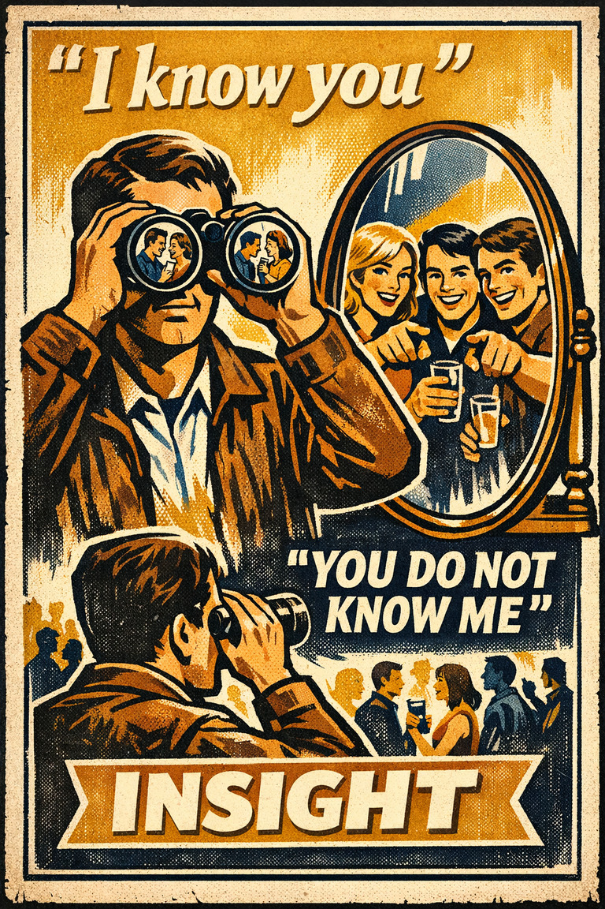
The tendency to think one understands others better than they understand oneself.
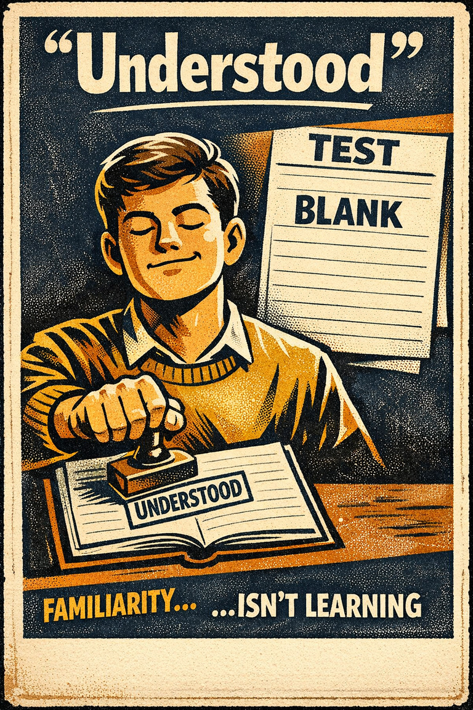
A false belief that if you understand something you learned and acquired a knowledge about it.
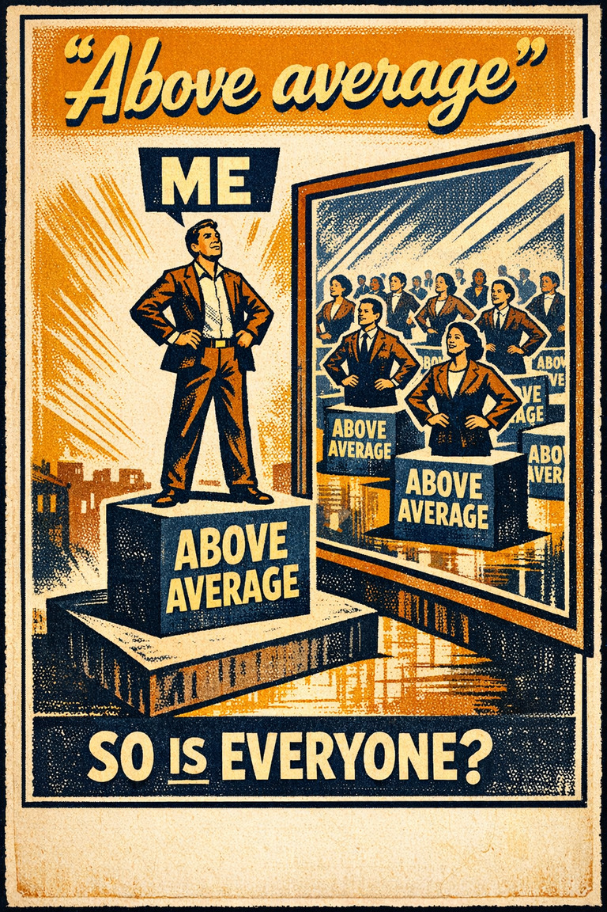
The tendency to overestimate one's desirable qualities, and underestimate undesirable qualities, relative to other people.
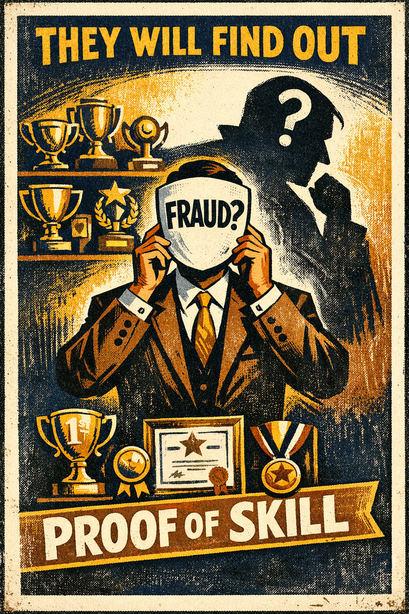
The tendency to doubt one's competence and fear being exposed as a fraud despite evidence of ability.
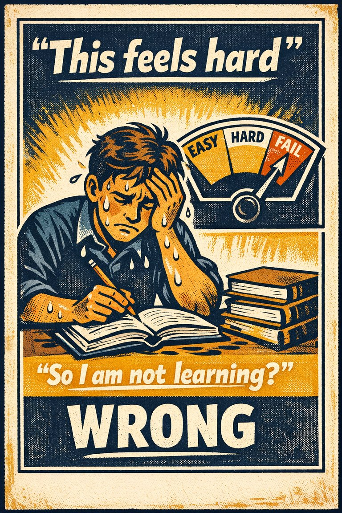
The tendency to interpret learning effort as a sign of poor learning rather than durable learning.

The tendency to treat a prior good deed as permission for later worse behavior.
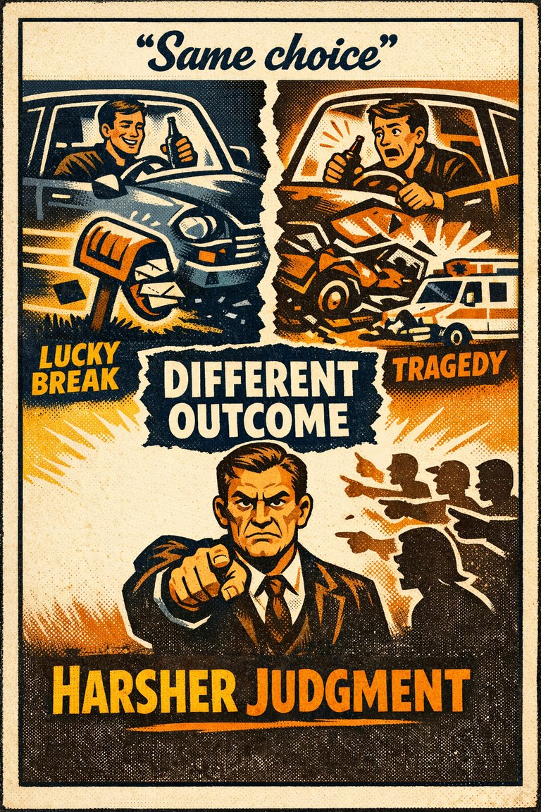
The tendency for people to ascribe greater or lesser moral standing based on the outcome of an event.

The tendency to see one's own view as plain reality and disagreement as ignorance, bias, or irrationality.

The tendency to give bad news, threats, criticism, and losses more psychological weight than equally sized positives.

The tendency to judge harmful inaction as more acceptable, or less blameworthy, than equally harmful action.

The tendency to over-report socially approved attitudes or behaviors and under-report the ones likely to invite embarrassment, judgment, or sanction.
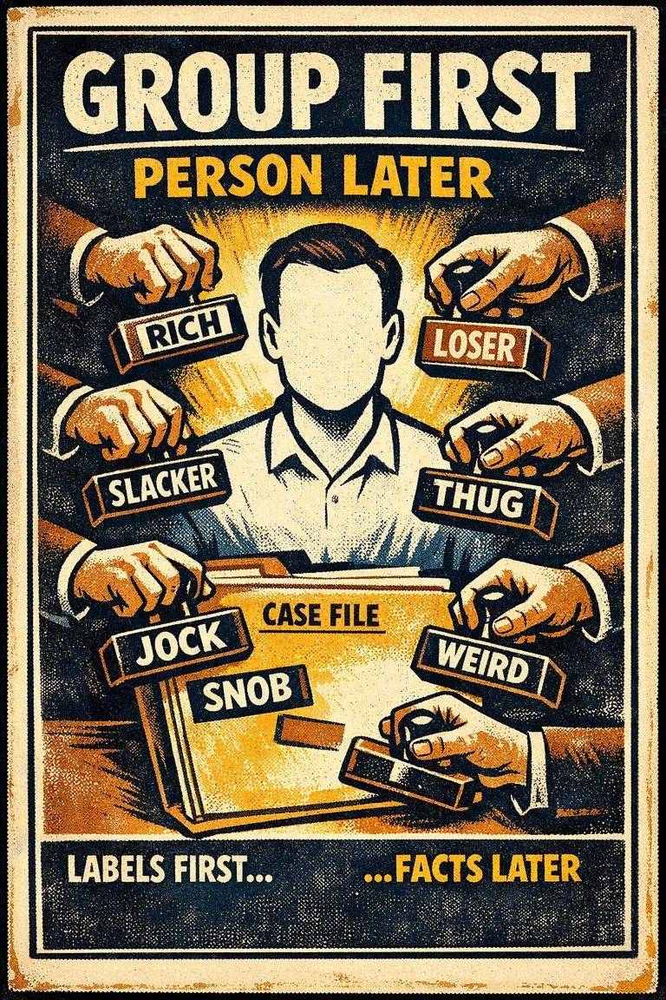
The tendency to assign group-based traits to an individual without enough individual evidence.
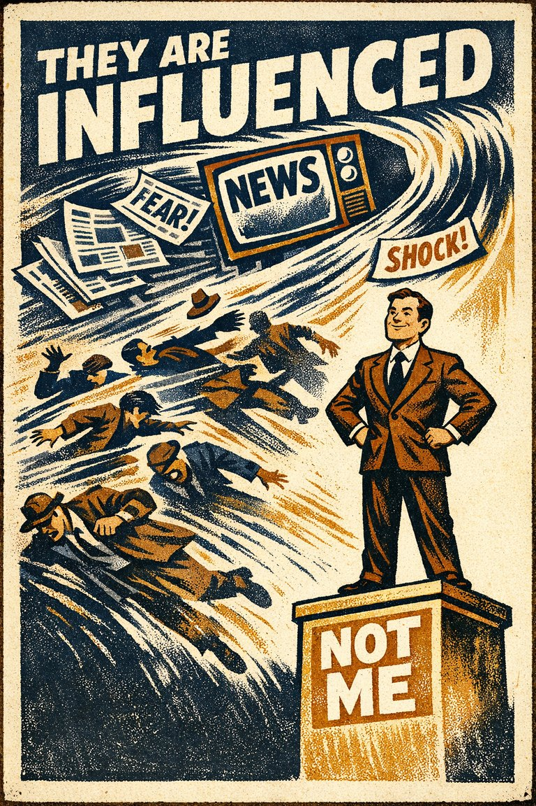
The tendency to believe that mass-communicated media messages have a greater effect on others than on themselves.
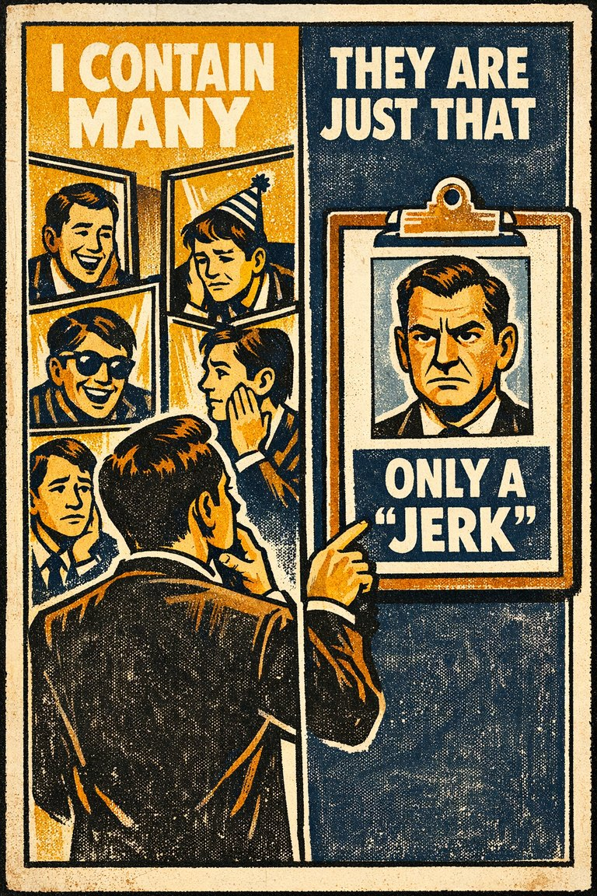
The tendency for people to view themselves as relatively variable in terms of personality, behavior, and mood while viewing others as much more predictable.
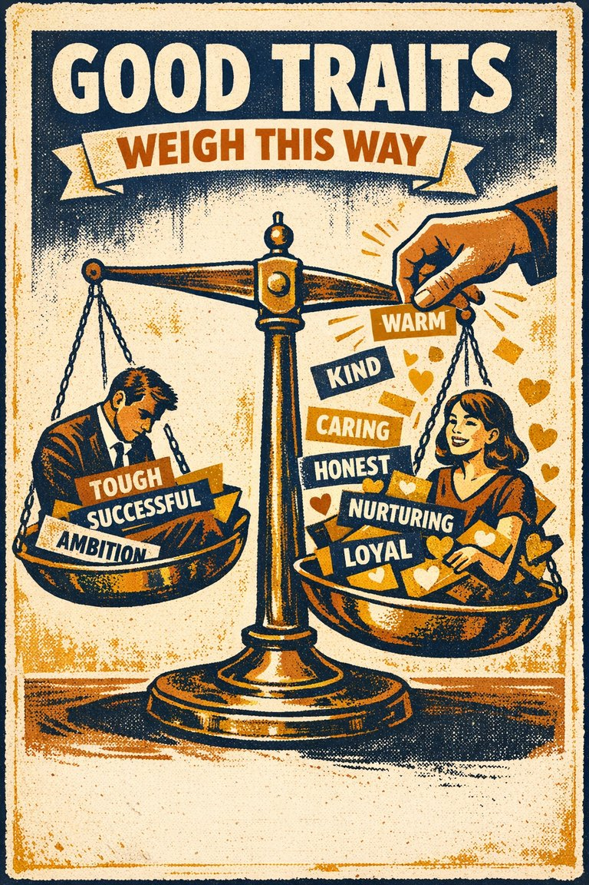
The tendency to associate more good attributes with women than with men.
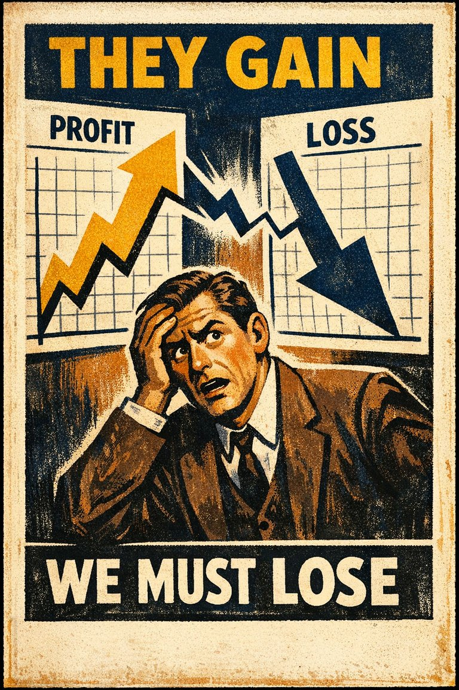
The tendency to see situations as zero-sum even when gains for one need not mean losses for another.